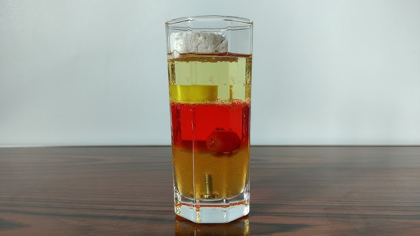
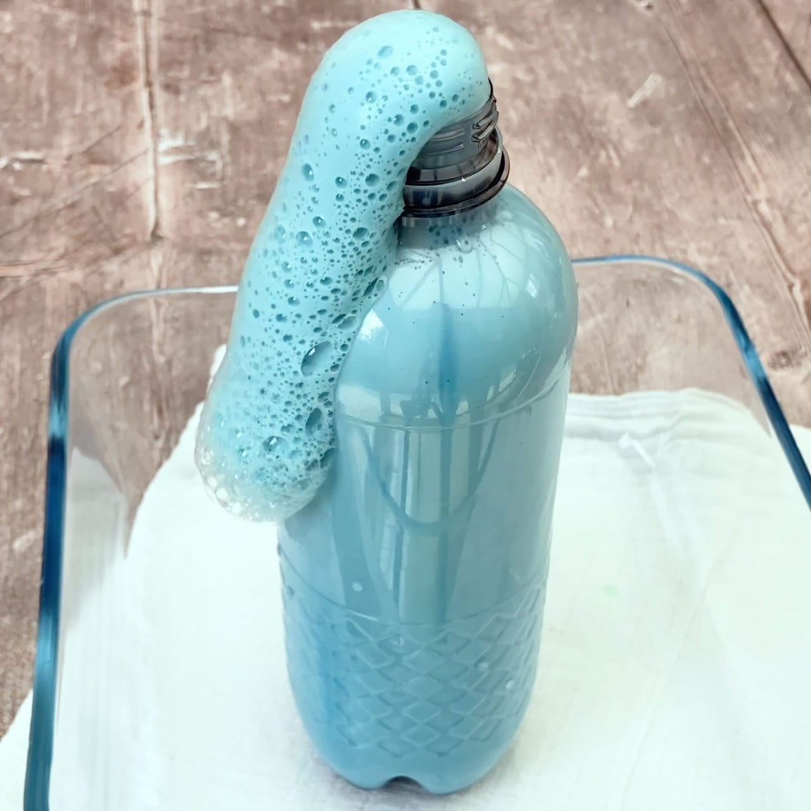
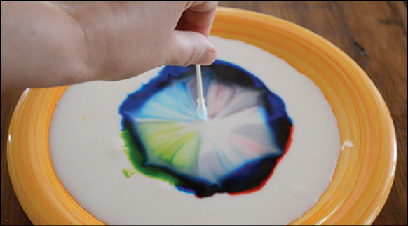
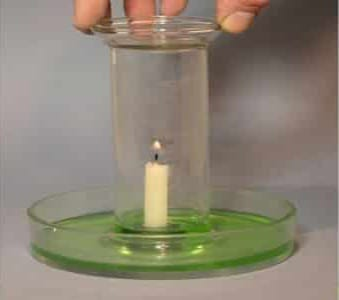

تجربة اختلاف كثافة السوائل
يمكن استخدام هذه التجربة لتوضيح مفهوم الكثافة وإمتزاج السوائل , وهذه التجربة تظهر كيف للسوائل ذات الكثافات المختلفة انها لا تختلط ببعضها البعض.
تجربة صنع رغوة من البيض
هذه التجربة تظهر التفاعل الكيميائى بين المواد المختلفة ,ويمكن أن تستخدم لتوضيح مفهوم التفاعل الحمضى والقاعدى.
تجربة انفجار الألوان فى الحليب
هذه التجربة ممتعة وبسيطة توضح تفاعلات الكيمياء فى السائل وتسمى هذه التجربة أحيانا "تجربة الحليب الملون" ويمكن تنفيذها بسهوله.
تجربة الماء والشمعة والهواء
هذه التجربة هى إحدى التجارب العلمية البسيطة التى توضح تأثير الضغط الجوى والأكسجين على إختراق الشمعة ويمكن تنفيذها بسهولة .
